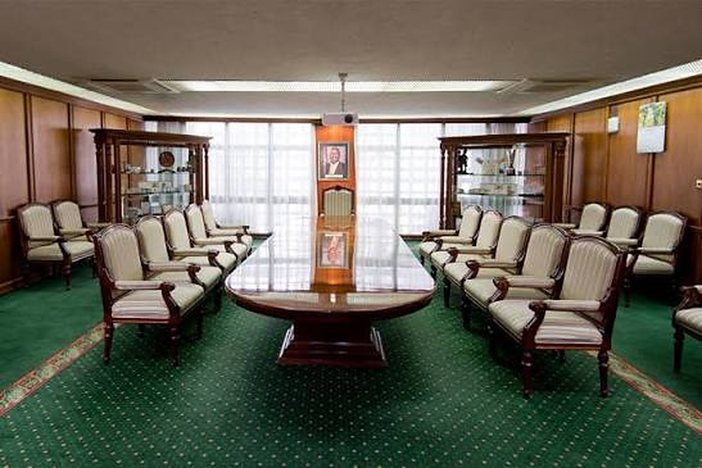

Photograph: Onyango George / EA Hospitality Pulse
Three central banks held their rates this week. The number that decides whether your lodge gets built was not one of them.
Kenya has cut its policy rate by 425 basis points and the average commercial lending rate has stalled at 14.4 per cent. Since 28 February every variable shilling loan has been priced off a common base rate, which means the whole of the difference between a hotel paying 11 per cent and one paying 18 per cent now sits in a premium each bank sets borrower by borrower. For East African hospitality, the cost of capital has stopped being a monetary story and become a documentation one.
The Central Bank of Kenya released its decision on a Wednesday afternoon in the flat institutional prose these documents always use. "The Monetary Policy Committee (MPC) decided to maintain the Central Bank Rate (CBR) at 8.75 percent," it read, and a little further down, reassuringly, "The banking sector remains stable and resilient, supported by adequate capital and liquidity buffers." The date was 7 October. The committee will not meet again until December.
Two days later in Dar es Salaam the Bank of Tanzania did the same thing at a different number. Governor Emmanuel Tutuba told reporters that "the 6.25 per cent Central Bank Rate is appropriate because it is continuing to dampen underlying inflationary pressures." Isabella Maganga, managing director of Equity Bank Tanzania, speaking for the bankers' association, supplied the expected verdict: "This translates to confidence and resilience of our economy." In Kampala the Bank of Uganda has been holding at 9.75 per cent, its governor Michael Atingi-Ego warning in August that "the risk that higher food, fuel, and other input prices will translate into a broad-based increase in inflation persists."
Three policy rates, three holds, one week. For an East African hotelier working out whether the twelve-room extension pencils, or whether the 2014 term loan can be refinanced before the shoulder season, not one of those numbers is the relevant one.
The relevant number is K, and almost nobody in the industry has read the document that created it.
Start with what Kenya's easing cycle actually delivered. The Central Bank Rate has come down by 425 basis points. Treasury bill yields fell from almost 17 per cent to around 9 per cent. Private sector credit growth, which was running at minus 2.9 per cent in January 2025, reached 10.6 per cent in September. Non-performing loans fell to 13.9 per cent of gross loans in September, from 17.6 per cent in August 2025. Services receipts rose 8.7 per cent in the twelve months to August, which the central bank attributes mainly to travel. By every aggregate measure this is a loosening economy with a recovering tourism line.
Now look at the one number a borrower pays. The average commercial bank lending rate was 14.4 per cent in September. It was 14.3 per cent in August and 14.4 per cent in July. It was 17.2 per cent in November 2024. So roughly 280 basis points of a 425 basis point policy cut reached the average loan, and over the past quarter the average loan has not moved at all. It ticked up.
That is not a failure of transmission. It is the design.
Since 1 September 2025 for new loans, and since 28 February 2026 for every existing one, Kenyan banks have been required to price variable-rate shilling lending off a single common reference rate rather than their own internal base rates. The reference is the Kenya Shilling Overnight Interbank Average, KESONIA, a volume-weighted average of what banks charge each other overnight, published daily by the central bank and compounded over the interest period. The formula the Central Bank of Kenya set out when it issued the revised Risk-Based Credit Pricing Model is short enough to fit on a business card: the total lending rate equals KESONIA plus a premium, K. The total cost of credit equals KESONIA plus K plus fees and charges, the origination and processing and negotiation and commitment fees that hotel borrowers have historically discovered at signing.
Stella Situma, a partner in the banking, finance and projects practice at Cliffe Dekker Hofmeyr, put the consequence plainly in a client alert in June. "Pricing differentiation occurs through the 'K', which is determined by each bank and is specific to each borrower," she wrote. And on its size: "According to the Total Cost of Credit website, the K ranges from as low as 5.5% to as high as 14.5%." If KESONIA is unavailable, she noted, "borrowers have a fall back on the Central Bank Rate as the alternative reference rate," a provision she recommends writing into loan agreements as standard.
Read those two sentences next to each other and the architecture becomes visible. The base is now identical for every shilling borrower in the country. The premium is set privately, borrower by borrower, and the premium is wider than the base. Governor Kamau Thugge said the quiet part at the October briefing, without euphemism: "If you are perceived to be more risky, your interest rate will be higher."
What goes into K is the bank's cost of lending, its expected return to shareholders, and its assessment of the borrower's probability of default, judged on credit history, repayment behaviour, existing debts and security. Set a hotel against those four criteria and the exercise becomes uncomfortable.
Credit history and repayment behaviour, for a seasonal business, means a cash flow series that collapses twice a year by design. A lodge in the Mara earns the bulk of its year between July and October. A Zanzibar beach property earns it in two windows separated by the long rains. Nothing in a standard credit model distinguishes a seasonal trough from early distress, and the reform gives banks no instruction to make that distinction. Existing debts often means a facility written in a different rate era against a different valuation. Security means one illiquid asset in a thin market, which brings us to the part of K that no individual operator controls.
In August and September 2025, three Kenyan hotels were placed under receivership within a month of each other. National Bank of Kenya appointed a receiver and manager over Nairobi Upper Hill Hotel Limited on 18 August, over a debt reported at KSh 447 million arising from facilities dating back to 2014, and took control of the Nyakoe Hotel in Kisii the same month. On 9 September, Equity Bank appointed joint receivers over the Eastland Hotel in Kilimani. All three notices named practitioners from the same firm. "Notice is hereby given that Kamal Anantroy Bhatt, of Anant Bhatt LLP, was appointed as Receiver & Manager," the Upperhill notice read. Business Daily, surveying the wreckage that September, reported that banks had seized at least four hotels since January 2025, most of them three and four star properties.
Those receiverships are now more than a year old, and the sector has largely stopped discussing them. The credit models have not. A lender whose hospitality book produced three receiverships and a recovery process in one quarter carries that experience forward as a sector loss-given-default assumption, and that assumption sits inside the K quoted to the hotel down the road that never missed a payment. This is the mechanism by which a well-run property pays for its neighbour's 2014 borrowing decisions.
Here is where the reform cuts the other way, and where the opportunity sits. Because the base rate is now common, the dispersion between lenders is pure premium, and it is visible. Central bank data for March 2026 put Citibank's average lending rate at 10.80 per cent, Stanbic at 11.75 per cent and Standard Chartered at 12.87 per cent. At the other end, Credit Bank was at 18.57 per cent, Bank of Africa Kenya at 18.41 per cent and HFC at 17.65 per cent. The average across the system was 14.70 per cent. That is a spread of 777 basis points between the cheapest and the dearest bank in the same economy, lending in the same currency, off the same overnight reference.
Before February, an operator comparing two offers was comparing two different base rates plus two differently constructed margins, which is to say comparing nothing. Banks must now publish their weighted average lending rates, their weighted average premium and their fees and charges for each product, both on their own websites and on the Total Cost of Credit site the central bank and the Kenya Bankers Association maintain. On 8 October that site showed most lenders quoting against the Central Bank Rate at 8.75 per cent and the rest against KESONIA at almost exactly the same level, which is the point: the base has stopped being a variable. A hotelier who takes an afternoon with that site is not shopping for a rate. They are reading their own risk assessment back from four institutions and finding out which priced the seasonality least harshly.
Two structural asymmetries are worth naming. The first is that foreign currency loans are excluded from all of this. They continue to price off SOFR, the euro short-term rate and SONIA. A lodge that earns dollars and borrows dollars sits entirely outside the Kenyan reform. A lodge that earns dollars and borrows shillings, which describes a great deal of East African hospitality, has just had the base rate on its liabilities rewritten by regulation while the revenue side did not change. Fixed-rate loans are excluded too, which quietly makes a fixed-rate facility a different instrument than it was in 2024.
The second is that Kenya's expensive credit is not a regional constant. Tanzania held at 6.25 per cent this week with private sector credit growing at an average of 32.5 per cent in the quarter through September, and with Zanzibar's economy expanding 6.7 per cent in the first quarter and estimated above 7 per cent in the two that followed. Uganda's policy rate is higher than Kenya's at 9.75 per cent, but its rediscount rate is 12.75 per cent and its bank rate 13.75 per cent, which frames the ceiling differently. A group operating across two or three of these markets is making a financing decision as well as an operating one, and its cheapest balance sheet is not necessarily in the country with the lowest policy rate.
Which leaves the instrument almost nobody in Kenyan hospitality uses. The Tourism Finance Corporation, the state lender set up for exactly this sector, quotes a single rate across its whole product range: "Interest charge is 9.5% per annum on reducing balance." Its development loan runs to ten years with up to twelve months' grace, its expansion and refurbishment facility on the same terms, and, pointedly, it offers refinancing over ten years. Against a commercial average of 14.4 per cent that is roughly 490 basis points, and against the dearest lender in the March table it is nearly 900.
The terms explain the absence of a queue. A development or refurbishment applicant must bring at least 30 per cent of total project cost, with at least 10 per cent of that in liquid resources, plus the title document for the proposed security, a 1.5 per cent appraisal fee with a KSh 50,000 minimum, and a 1 per cent commitment fee, both non-refundable. That is a demanding ask for a property that has spent three years rebuilding working capital. It is a considerably less demanding ask than 18.57 per cent.
None of this is what the sector will discuss this week. The trade conversation will be about arrivals, about the shoulder season, about whether the short rains behave. But the easing cycle is over in Kenya for now, the committee does not sit again until December, and the central bank has in the meantime handed every borrower a published, comparable, negotiable number and said plainly that it reflects how risky the lender thinks they are. The cost of capital in East African hospitality is now less a question of what the governor decides than of what the credit file says. That is the harder problem and the more tractable one. It can be worked on in October, which the MPC calendar cannot.
📣 Telegram 💬 WhatsApp 💼 LinkedIn 📚 All guides